전체 프로그램 일정표
13:30~14:2050분연습실 1 (2층)
15:30~16:2050분연습실 2 (2층)
13:30~14:2050분연습실 1 (2층), 연습실 2 (2층)
14:30~15:2050분연습실 2 (2층)
15:30~17:2050분연습실 1 (2층)
15:00~15:4040분연습실 1 (2층)
Full Program Schedule
13:30~14:2050 minStudio 1 (2F)
15:30~16:2050 minStudio 2 (2F)
13:30~14:2050 minStudio 1 (2F), Studio 2 (2F)
14:30~15:2050 minStudio 2 (2F)
15:30~17:2050 minStudio 1 (2F)
15:00~15:4040 minStudio 1 (2F)
〈웰컴 투 데프 월드〉 전시
Welcome to the Deaf World Exhibitions
일시 10. 31.(토) 10:00~17:30 ·
장소 모두예술극장 모두스튜디오
손과 몸의 움직임이 문자와 그림, 문학이 되는 순간을 만나 보세요.
Oct 31 (Sat) 10:00–17:30 · Modu Studio, Modu Art Theater
Experience the moment when movements of hands and body become writing, painting and literature.
수어문자 전시 및 해설
SignWriting Exhibition & Guided Commentary
김인선
Kim In-sun
한국어 음성 언어를 한글로 기록하듯, 수어문자(SignWriting)로 기록한 한국수어를 소개합니다.
Just as spoken Korean is written in Hangul, this exhibition presents Korean Sign Language recorded in SignWriting.
수어 문학 중 수어 시(Sign Language Poem) 영상을 수어문자로 전사한 결과물을 전시합니다. 수어문자는 수어의 형태와 움직임을 그대로 표기할 수 있는 기호 체계입니다. 한국어 번역문이 아닌 수어문자 표기문을 보며, 수어로 표현할 수 있는 특성을 이해하고 수어를 기록할 때 수어문자를 활용할 수 있음을 알려줍니다.
The exhibition shows sign language poems from sign literature, transcribed into SignWriting. SignWriting is a symbol system that records the shape and movement of sign language as they are. Looking at SignWriting texts rather than Korean translations, visitors can understand what sign language can express and see how SignWriting can be used to record sign language.

한 공간, 시선의 온도
A Space, the Temperature of Gaze
청홍
Cheong-hong
농인의 언어와 문화, 삶의 경험을 담은 데비아(De'VIA) 작품을 만나 보는 전시입니다.
An exhibition of De'VIA works that carry Deaf language, culture and life experience.
이번 전시는 데비아의 역사와 의미를 소개하고, 관련 작품을 통해 데비아에 대한 이해를 넓히고자 합니다. 농인으로 살아가며 경험한 소통의 방식과 시선, 사회 속에서 마주한 편견과 감정을 표현한 개인 작품을 선보입니다. 농인의 시선으로 바라본 세상과 그 안에 담긴 다양한 생각을 관람객과 나누고자 합니다.
This exhibition introduces the history and meaning of De'VIA and deepens understanding of it through related works. It presents personal works that express the ways of communicating, the perspectives, and the prejudices and emotions encountered in society as a Deaf person. Through them, it aims to share with visitors the world as seen through Deaf eyes and the many thoughts it holds.
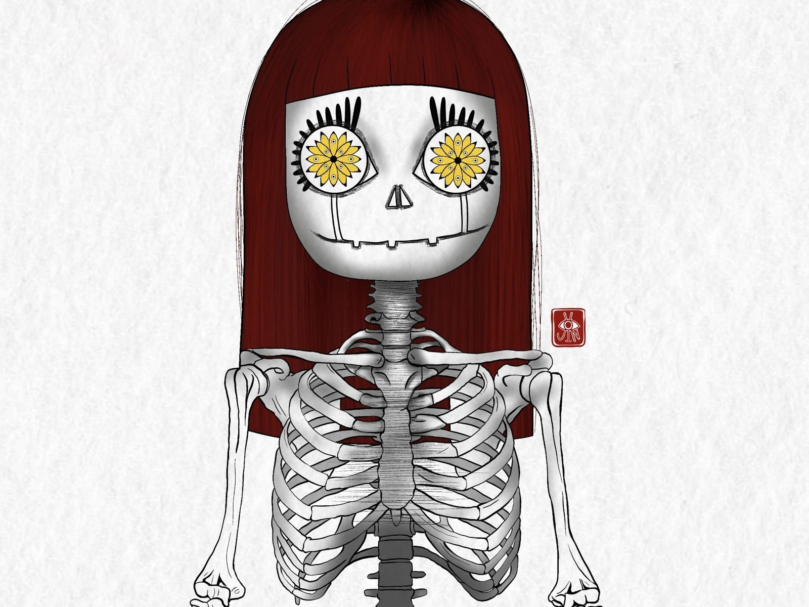
수어문학 전시
Sign Literature Exhibition
수어민들레
Sign Language Dandelion
농인의 언어인 수어로 창작된 다양한 수어문학 작품을 만나는 시간입니다.
A time to meet diverse sign literature works created in sign language, the language of Deaf people.
수어문학은 수어시를 비롯해 수어이야기, 비주얼 버내큘러(Visual Vernacular, VV), 수어연극 등 다양한 장르로 이루어져 있습니다. 손과 몸의 움직임과 표정, 공간의 활용을 통해 이야기를 전하고 감정을 표현하는 수어문학의 매력을 보여 드립니다. 수어가 지닌 예술적 가능성과 시각적 언어의 아름다움을 발견하는 기회입니다.
Sign literature includes sign poetry, sign stories, Visual Vernacular (VV), sign theatre and more. Through the movement of hands and body, facial expression and use of space, it conveys stories and emotions. This exhibition offers a chance to discover the artistic potential of sign language and the beauty of visual language.

〈웰컴 투 데프 월드〉 워크숍
Welcome to the Deaf World Workshops
수어로 이야기하고, 몸으로 표현하고, 그림으로 생각을 나누는 참여형 워크숍입니다. 모든 워크숍은 현장 접수로 진행됩니다.
Participatory workshops where you tell stories in sign language, express with your body, and share ideas through drawing. All workshops are on-site registration.
코다 사용설명서
CODA User Manual
조미혜
Cho Mi-hye
나를 알아가고, 서로를 이해하며, 코다만의 특별함을 발견하는 시간입니다.
A time to get to know yourself, understand each other, and discover what makes CODAs special.
〈코다 사용설명서〉는 코다(CODA, Children of Deaf Adults)가 자신의 경험과 정체성을 돌아보고, 서로의 이야기를 나누며 자신만의 특별함을 발견하는 참여형 워크숍입니다. 놀이와 자기표현 활동을 통해 자신을 새롭게 바라보고, 나를 표현하는 물건과 사용설명서를 만들며 성격과 감정, 관계 맺는 방식을 돌아봅니다.
CODA User Manual is a participatory workshop where CODA (Children of Deaf Adults) look back on their experiences and identity, share stories with one another, and discover what makes each of them special. Through play and self-expression activities, they see themselves anew, create objects and a user manual that express who they are, and reflect on their personality, emotions and ways of forming relationships.
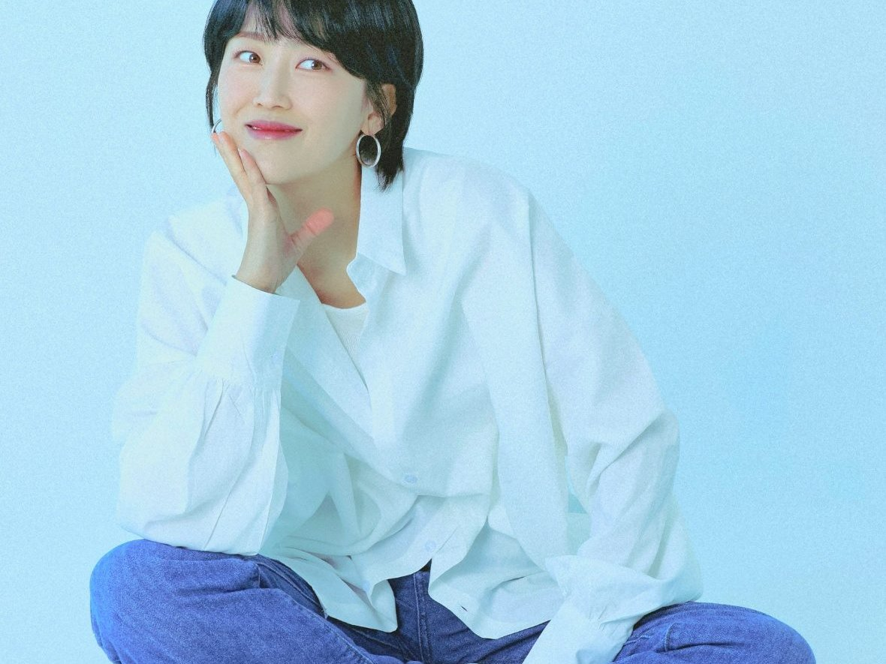
그림으로 만나는 농인의 시선
Deaf Perspectives Through Painting
De'VIA(데비아) 시각예술 체험 · 변강석
De'VIA Visual Art Experience · Byun Kang suk
데비아에 대한 이해와 농인의 다양한 시선을 그림으로 나눕니다.
Understanding De'VIA and the many perspectives of Deaf people, expressed through drawing.
De'VIA(데비아)는 농인의 언어와 문화, 정체성, 삶의 경험을 그림으로 표현하는 시각예술 운동입니다. 이번 워크숍에서는 아직 한국에 널리 알려지지 않은 De'VIA의 역사와 대표 작품을 살펴보고, 자신의 경험과 생각을 그림으로 표현해 봅니다. 그림을 잘 그리지 않아도 괜찮으며, 농인과 청인 누구나 서로 다른 시선과 경험을 예술로 나눌 수 있습니다.
De'VIA is an art movement that expresses Deaf language, culture, identity and life experience through visual art. In this workshop, we explore the history and representative works of De'VIA, which is not yet well known in Korea, and express your own experiences and thoughts through drawing. You don't need to be good at drawing. Deaf and hearing participants alike can share different perspectives and experiences through art.

움직임 & 수어 릴레이 댄스 워크숍
Movement & Sign Language Relay Dance Workshop
김지연(누비스)
Kim Ji-yeon (Nubis)
감정과 신체 표현, 수어 및 제스처를 활용한 릴레이 창작 댄스입니다.
A relay creative dance that uses emotional and physical expression, sign language and gestures.
언어와 연령, 신체 조건의 경계를 넘어 신체 표현, 제스처, 그리고 수어를 매개로 소통하고 함께 안무를 만들어 가는 커뮤니티 참여형 예술 프로그램입니다. 멋진 춤을 완성하기보다 참가자 각자가 자신의 생각과 감정을 손짓과 신체 움직임으로 자유롭게 표현하는 과정에 집중합니다. 참가자가 각자의 유일무이한 동작을 제시하고, 이를 릴레이 형태로 연결하여 하나의 완성된 팀 군무를 만들어냅니다.
Going beyond the boundaries of language, age and physical ability, this community participatory art program uses body expression, gestures and sign language to communicate and create a dance together. Rather than perfecting a dance, the focus is on the process where each participant freely expresses their thoughts and emotions through hand gestures and body movement. Each participant offers a unique movement, and these are linked in relay form to create one complete team dance.
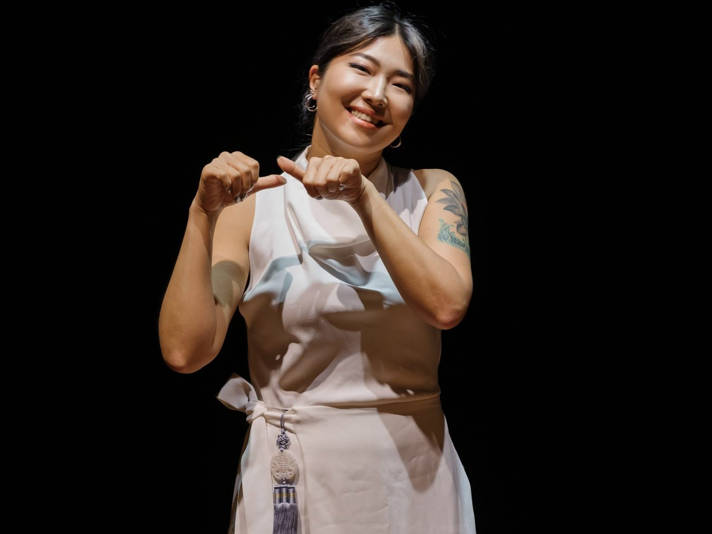
VV 워크숍
VV Workshop
다비드 우르반치크(David Urbanczyk)
David Urbanczyk
VV, 수어 시, 데프 슬램의 차이를 이해하고 직접 표현해 보는 워크숍입니다.
Understanding the differences between VV, sign poetry and Deaf slam, and experiencing them directly.
손과 몸의 움직임, 표정만으로 얼마나 다양한 이야기를 표현할 수 있을까요? VV(Visual Vernacular), 수어 시(Poesie), 데프 슬램(Deaf Slam)의 특징과 차이점을 살펴보고, 수어를 기반으로 한 다양한 예술 표현 방식을 알아봅니다. VV의 창시자와 역사부터 각 장르의 표현 방식, 감정과 표정을 구성하는 방법까지 예시 영상을 통해 이해하고 직접 실습하며 경험해 봅니다.
How many different stories can be told with only hands, body movement and facial expression? This workshop explores the features and differences of VV (Visual Vernacular), sign poetry (Poesie) and Deaf Slam, and introduces various sign-based forms of artistic expression. From the origins and history of VV to how each genre builds expression, emotion and facial expression, you will understand through example videos, then practice and experience directly.

<보이는 언어를 기록하다> : 수어문자
Recording the Visible Language: SignWriting
최지혜
Choi Ji-hye
보이는 언어인 수어를 문자로 읽고 직접 써 보는 체험형 프로그램입니다.
A hands-on experience of reading and writing SignWriting, the way to write visible language.
수어도 문자로 기록할 수 있을까요? 언어와 문자의 관계를 살펴보고, 수어를 기록하는 체계인 수어문자에 대해 알아봅니다. 손 모양, 손 방향, 손 위치, 움직임, 비수지기호 등 수어문자의 기본 구조를 익히고, 실제 수어문자를 가볍게 읽어봅니다. 마지막으로 자신의 수어이름이나 단어를 직접 표기해 보며, 보이는 언어를 문자로 기록하는 즐거움을 경험해 봅니다.
Can sign language be recorded in writing? Looking at the relationship between language and writing, you will learn about SignWriting, a system for recording sign language. You will learn the basic structure of SignWriting — handshape, hand orientation, hand location, movement, and non-manual signals — and read real SignWriting lightly. Finally, you will write your own sign name or a word, and experience the joy of recording a visible language in writing.

〈웰컴 투 데프 월드〉 부스
Welcome to the Deaf World Booths
농문화와 수어를 기반으로 활동하는 12개 팀이 한자리에 모입니다. 굿즈를 구경하고, 직접 체험하고, 이야기를 나누며 데프 문화를 다양한 방식으로 만나 보세요.
일시 10. 31.(토) 10:00~17:30 ·
장소 모두예술극장 모두라운지
Twelve teams active in Deaf culture and sign language come together in one place. Check out merchandise, try things out for yourself, and experience Deaf culture in many ways.
Oct 31 (Sat) 10:00–17:30 · Modu Lounge, Modu Art Theater
소온우웃다 : 손으로 말하고, 손으로 웃다
SOONWOOUTDA × SONDOLDOL : Speak with Hands, Smile Together
소온우웃다
SOONWOOUTDA
농인 엄마이자 디자이너인 남다영이 운영하는 수어 라이프스타일 브랜드입니다. 수어와 지문자를 일상 속 디자인으로 풀어내어 포스터, 엽서, 의류 등 다양한 제품을 선보입니다.
A sign language lifestyle brand run by Deaf mother and designer Nam Da-young. It turns sign language and fingerspelling into everyday design for posters, postcards, apparel and more.
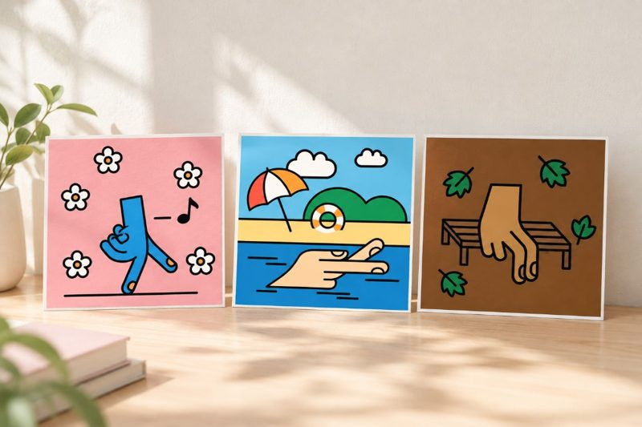
농인의 여행을 잇다, 데프누리
Connecting Deaf Travelers, DeafNuri
데프누리 주식회사
DeafNuri
농인이 자신의 언어로 여행 정보를 접하고 다양한 여행을 경험할 수 있도록 맞춤형 관광 서비스와 콘텐츠를 만드는 관광 플랫폼입니다. 이번 부스에서는 데프누리의 여행 이야기와 굿즈를 만나볼 수 있습니다.
A tourism platform creating customized travel services and content so Deaf people can access travel information in their own language and enjoy diverse trips. At this booth, you can meet Deafnuri's travel stories and merchandise.
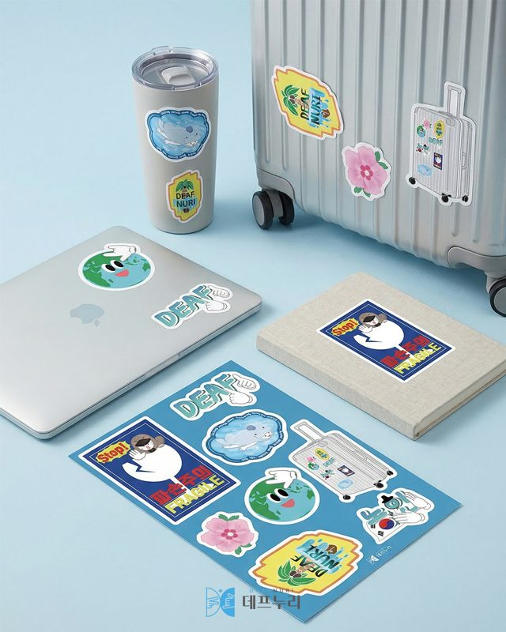
데프리다 × 해마수중하키단
Deafreeda × Haema Underwater Hockey Team
데프리다X해마수중하키단
Deafreeda × Haema
농인 프리다이빙 브랜드 데프리다와 농인 수중하키팀 해마수중하키단이 함께하는 체험 부스입니다. 숨참기 챌린지와 수중하키 장비 체험을 통해 농인 수중스포츠의 매력을 만나볼 수 있습니다.
An experience booth by Deafreeda, a Deaf freediving brand, and Haema Underwater Hockey Team, a Deaf underwater hockey team. Try the breath-hold challenge and underwater hockey equipment to discover the appeal of underwater sports for Deaf people.
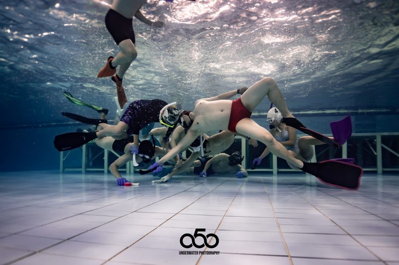
수다람툰 굿즈샵
SUDARAM Merch Shop
수다람
SUDARAM
수어와 농문화를 바탕으로, 농인으로서 마주하는 일상과 생각을 그리는 작가 수다람입니다. 직접 디자인하고 정성껏 제작한 수다람툰의 이야기를 담은 굿즈(수어포스터, 스티커 등)를 만나보세요.
Artist Sudaram draws everyday life and thoughts as a Deaf person, rooted in sign language and Deaf culture. Check out goods featuring the stories of Sudaram Toon, designed and made with care, such as sign language posters and stickers.
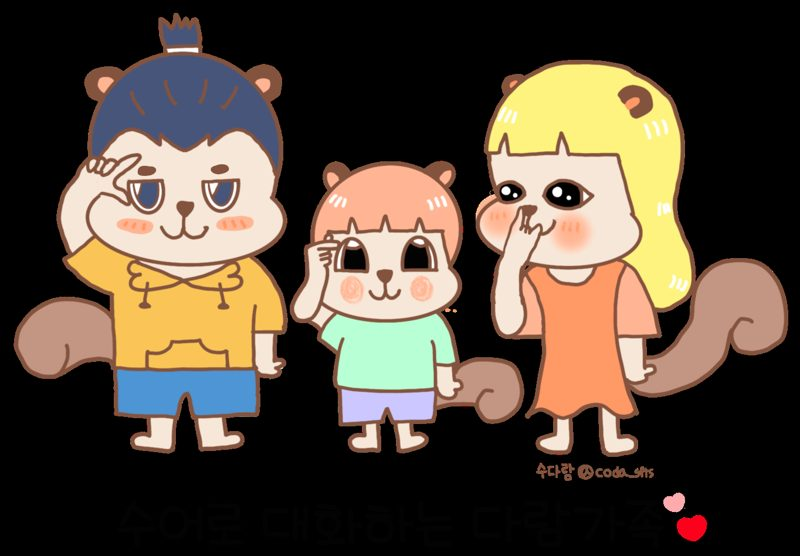
비베이크 구움과자 판매 부스
BeeBake Baked Goods Booth
비베이크
BeeBake
6년차 홈베이커로, 다양한 구움과자와 디저트를 직접 만들고 있습니다. 이번 행사에서는 휘낭시에, 쿠키 등 수제 구움과자를 판매할 예정입니다.
A home baker with six years of experience, making a variety of baked goods and desserts by hand. For this event, BeeBake will sell handmade baked goods including financiers and cookies.
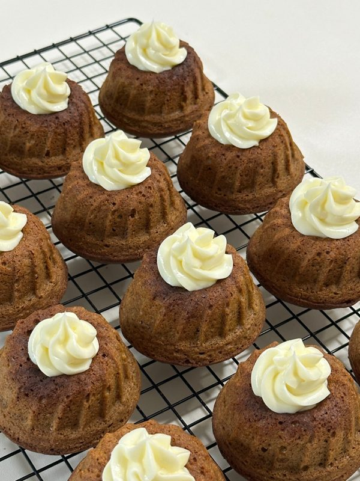
제스처네일, 예쁜 손끝으로 전하는 이야기
Gesture Nail, Stories Told Through Beautiful Fingertips
제스처네일
Gesture Nail
농인네일리스트 2인이 함께 운영하는 네일샵입니다. 케어 원컬러 시술을 직접 경험하실 수 있으며, 수제 핸드크림 등 손관리 제품도 만나볼 수 있습니다. 부스를 방문해주신 관람객 특별 할인쿠폰도 함께 제공해 드립니다.
A nail shop run by two Deaf nail artists. Experience the care one-color treatment in person, and discover handmade hand creams and other hand care products. Visitors who stop by will receive a special discount coupon.
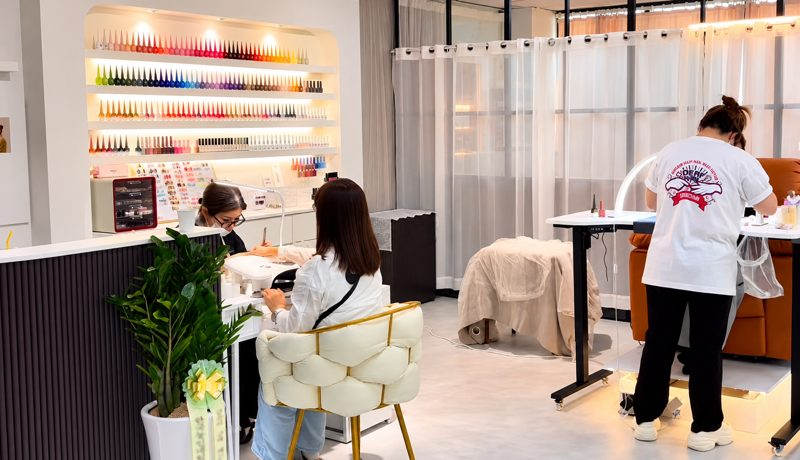
꽃으로 잇는 우리
Connected by Flowers
봉주르플라워
Bonjour Flower
꽃과 수어로 사람과 사람을 잇는 공간입니다. 꽃 선물에 담긴 다양한 의미를 수어로 배우고, 직접 꽃을 만들며 마음을 나누는 특별한 경험을 함께합니다.
A space connecting people through flowers and sign language. Learn the meanings behind flower gifts in sign language, make flowers yourself, and share heartfelt messages in a special experience together.
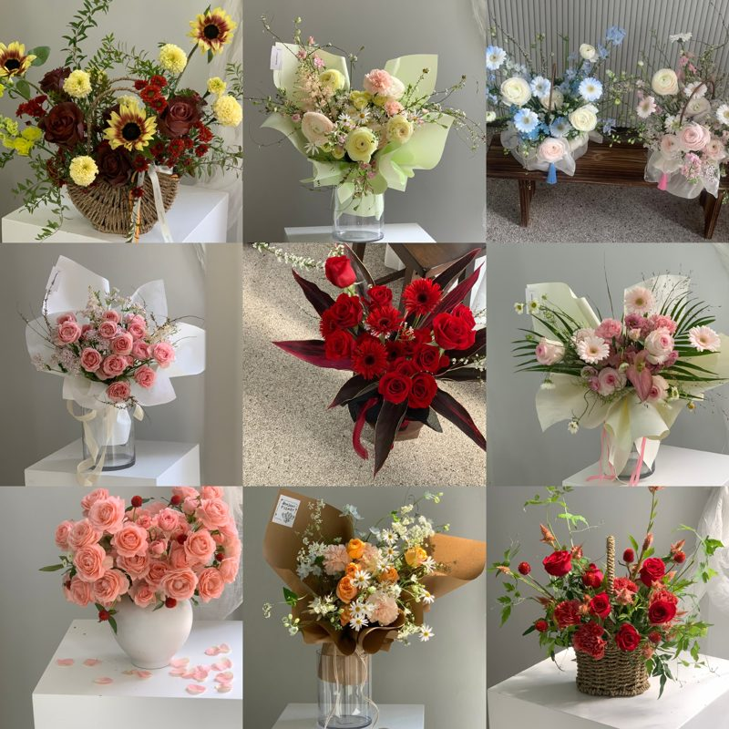
수어민들레
Sign Language Dandelion
수어민들레
Sign Language Dandelion
수어의 아름다움과 즐거움을 나누는 판매·체험 부스입니다. 국제수화·수어 카드 게임, 배지, 티셔츠 등 다양한 굿즈를 만나고 수어 카드 게임도 직접 체험할 수 있습니다.
A sales and experience booth that shares the beauty and joy of sign language. Find goods such as the International Sign and sign language card game, badges and T-shirts, and try the sign language card game yourself.
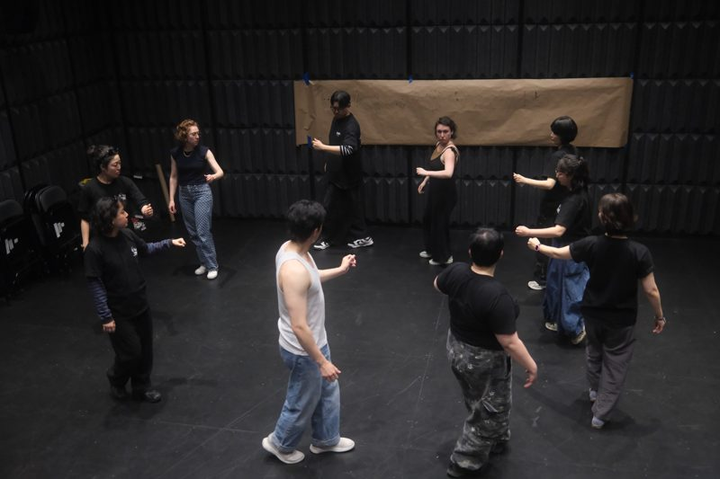
농인의 자녀인 코다(CODA)의 모임, 코다코리아
CODA Korea, a network and organization for CODA.
코다코리아
CODA Korea
농인의 자녀인 코다를 연결하고 그들의 이야기를 전하는 비영리단체입니다. 코다의 경험과 정체성을 담은 도서 전시 및 판매, 리플릿과 스티커를 만나볼 수 있습니다.
A non-profit organization connecting CODAs and sharing their stories. Browse and buy books that capture CODA experiences and identity, and get leaflets and stickers.
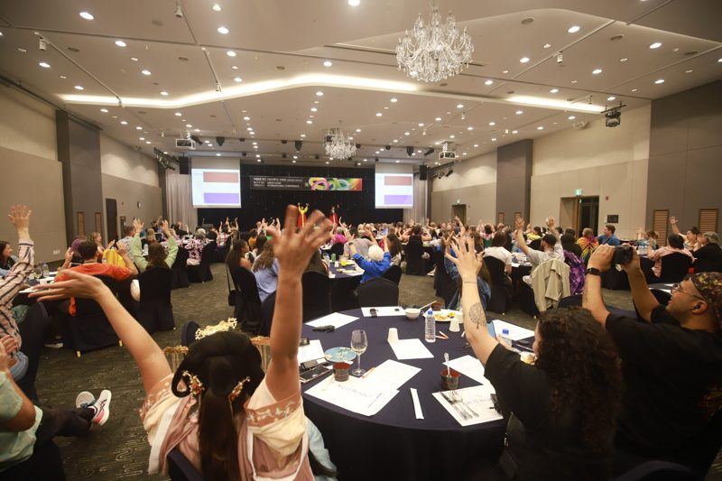
한국농인네일협회
Korean Deaf Nail Association
한국농인네일협회
Korean Deaf Nail Association
손끝의 기술로 새로운 가능성을 넓혀가는 농인 네일리스트들의 성장과 도전을 소개합니다. 협회 활동 팸플릿과 네일아트 작품 도록, 매거진 전시 및 마그넷 판매를 통해 이야기를 만나보세요.
Introduces the growth and challenges of Deaf nail artists, who expand new possibilities with the skill of their fingertips. Learn about the association's activities through pamphlets, see a catalog of nail art works, and buy magnets, and hear the stories of Deaf nail artists.
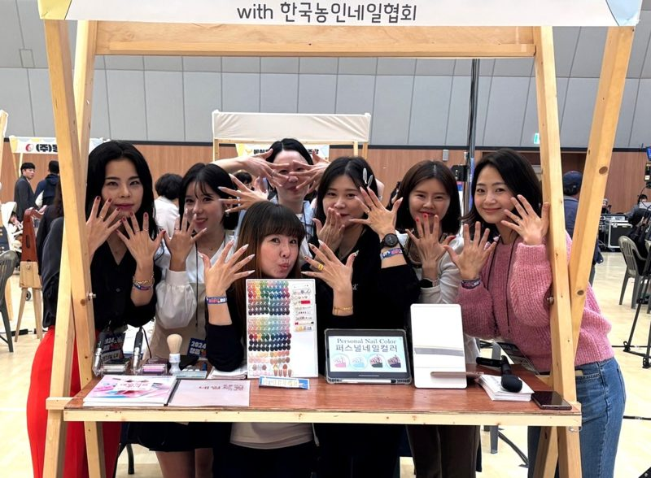
한국농아청년회
Korea Association of the Deaf Youth (KADY)
한국농아청년회
Korea Association of the Deaf Youth
농청년이 주체가 되어 권익 증진과 사회참여 확대를 위해 활동하는 청년단체입니다. 국내외 교류와 문화, 교육 활동을 통해 농청소년과 농청년의 성장과 연대를 이어가고 있습니다.
A youth group where Deaf young people lead efforts to expand rights and social participation. Through domestic and international exchange, culture and education activities, it supports the growth and solidarity of Deaf youth and young adults.
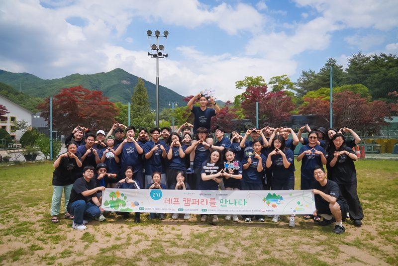
강이, 원이와 함께 놀아요
Let's play with Kang and Won!
강원도수어문화원
Gangwon Sign Language Culture Center
퍼즐을 맞추며 쉽고 재미있게 수어 단어를 익히는 참여형 체험 프로그램입니다. QR코드를 통해 다양한 수어 영상과 학습 콘텐츠를 만나며 일상 속 수어와 더욱 가까워질 수 있습니다.
A participatory experience program where you learn sign words easily and fun while solving puzzles. Scan QR codes to explore diverse sign language videos and learning content, bringing sign language closer to everyday life.
슬램과 공연
Performance&Slam
순간의 생각을 겨루는 수어 슬램, 수어로 창작한 문학을 무대에서 만나는 공연입니다.
A sign language slam where ideas face off in the moment, and a performance where sign-language literature comes to life on stage.
〈웰컴 투 데프 월드〉 슬램
Welcome to the Deaf World Slam
수어민들레
Sign Language Dandelion
주어진 주제를 보고 순간적으로 생각을 정리하는 사고력과 순발력, 자신의 주장을 설득력 있게 전달하는 논리력을 겨루는 수어 대결입니다.
A sign language contest of instant thinking that tests the ability to organize ideas quickly, the agility to respond, and the logic to deliver your argument persuasively.
참가자들은 주제에 맞춰 자신의 생각과 의견을 수어로 자유롭게 표현하며, 15초씩 번갈아 가며 상대방의 주장에 대응하거나 새로운 관점을 제시합니다. 정해진 답은 없으며, 각자의 생각과 논리로 관객의 공감을 이끌어내는 것이 중요합니다. 관객들은 두 참가자의 이야기를 지켜보며 누구의 주장에 더 공감하는지 박수로 표현하고, 가장 많은 박수를 받은 참가자가 우승합니다.
Participants express their own thoughts and opinions in sign language on a given topic, taking turns for 15 seconds each. They respond to the other's argument or present a new perspective. There is no fixed answer; what matters is drawing the audience's empathy through one's own thoughts and logic. After watching both participants, the audience applauds for the argument they find more convincing, and the participant who receives the most applause wins.

〈웰컴 투 데프 월드〉 수어문학 공연
Welcome to the Deaf World Sign Literature Performance
수어민들레
Sign Language Dandelion
아직은 낯설지만 어딘가 익숙한 수어문학. 직접 눈으로 보고 느끼며 그 매력을 발견할 수 있는 공연입니다.
Sign literature may feel unfamiliar yet somehow familiar. It is a performance where you can see it with your own eyes, feel it, and discover its appeal.
농인의 언어인 수어를 바탕으로 손과 몸의 움직임, 표정, 공간을 활용하는 수어문학은 소리와 글자 중심의 문학과는 또 다른 예술적 경험을 선사합니다. 수어시를 비롯해 수어이야기와 비주얼 버내큘러(VV), 수어연극 등 각 장르는 수어만의 시각적 특성을 바탕으로 저마다 다른 방식으로 이야기를 전하고 감정과 생각을 표현합니다. 수어를 처음 접하는 사람에게는 새로운 감각으로, 익숙한 사람에게는 미처 발견하지 못했던 표현의 가능성으로 다가옵니다. 익숙한 듯 낯설고, 낯설지만 어느새 빠져들게 되는 수어문학의 세계에서 다채로운 매력과 무한한 예술적 가능성을 만나 보세요.
Based on sign language, the language of Deaf people, sign literature uses hand and body movement, facial expression, and space, offering an artistic experience different from literature centered on sound and text. Sign poetry, sign stories, Visual Vernacular (VV) and sign theatre each convey stories and express emotions and thoughts in their own ways, drawing on the unique visual qualities of sign language. For those encountering sign language for the first time, it offers a fresh sensation; for those familiar with it, it reveals expressive possibilities they had not yet noticed. Experience the world of sign literature, which feels both familiar and new, and draws you in, with its diverse charm and boundless artistic potential.